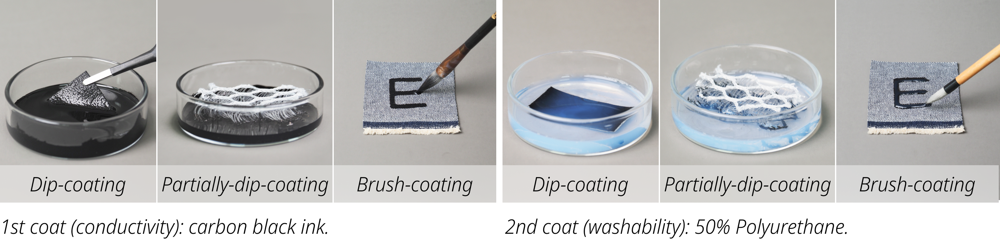

Fabrication Workflow
Create Fabric Inputs: Double Coating Process
Various fabric inputs can be fabricated using the double coating process:
Coat with carbon black ink
First choose the fabric material to be coated. It can whether be off-the-shelf garments or fabric sheets. For fabric sheets, the shapes were designed with CAD and cut out with laser cutter. Then coat the fabric with carbon black ink (234A carbon ink, Shanghai Hero Ltd.). Absorb excessive ink with filter paper or tissues. Then heat and dry the fabric at 80°C, 20min. This step endows fabric with conductivity and therefore input functionalities. Coating methods include:
- dip-coating: immerse entire fabric in ink for 1min.
- partially-dip-coating: immerse parts of the fabric in ink for 1min.
- brush-coating: draw with brush 2-3 times until fibers are evenly coated. Chinese brush is recommended, because its unique tapered structure can steadily hold liquid inside, making the liquid transfer steady and controllable.
Coat with PU
Coat the fabric with 50% polyurethane water dispersion (F0402, Jitian Chemical Co., Ltd, China) using the same three coating methods above. The chosen ink and PU coating method should be the same. Absorb excessive PU with filter paper or tissues. Then heat and dry the fabric at 80°C, 20min. This step improves the fabric inputs' washability and abrasion resistivity.
Utilize Fabric Inputs to Create Interactive Textiles

We proposed a pipeline to build integrated interactive textiles using fabric inputs fabricated with the double-coating process.
Draw Low-fidelity Design
If the fabric input is implemented on laser-cut fabrics, we recommend to also use laser to mark places (cut at low laser power) for wiring, output component area, fabric input area and processor area. If the base fabric is off-the-shelf garment (e.g. gloves), erasable pen along with acrylic templates of output and processor components are recommended to draw sketches for the low-fidelity design.
Iron Conductive Traces
Iron serpentine-shaped silver fabric segments(0.6 Ω/cm) with mesh TPU backing, which guarantees good conductive contact between layers and great adhesiveness on fabrics, onto the base fabric. Serpentine wire segments not only have good elasticity and resistance stability, but can also be bent in different directions to accommodate various wiring paths.
Fabricate & Connect Fabric inputs
Coat fabrics with carbon black ink and polyurethane. Then, use the mesh TPU film to iron the fabric input onto the base fabric. For some three-dimensional fabric inputs, sewing may be needed to connect the input.
Connect Outputs and Processor
Connect output components (if any), and a voltage divider circuit based on microcomputer ESP32C3 onto the fabric using metal button. We provide several output components to support a wider range of expression possibilities for users, including LEDs, vibrators, and buzzers.